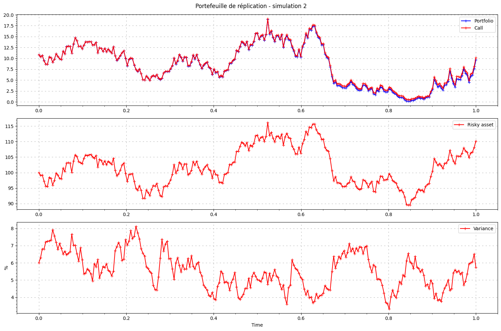

Hedging with Heston#
[1]:
from hestonpy.models.heston import Heston
import matplotlib.pyplot as plt
import numpy as np
[2]:
# Parameters for the Heston model
S0 = 100.0 # Initial spot price
V0 = 0.06 # Initial volatility
r = 0.03 # Risk-free interest rate
kappa = 1.0 # Mean reversion rate
theta = 0.06 # Long-term volatility
drift_emm = 0.01 # Drift term
sigma = 0.3 # Volatility of volatility
rho = -0.5 # Correlation between asset and volatility
heston = Heston(S0, V0, r, kappa, theta, drift_emm, sigma, rho)
strike = 100
strike_hedging = 110
maturity = 1
maturity_hedging = 1.2
nbr_points = 252
nbr_simulations = 100
portfolio, S, V, C = heston.delta_vega_hedging(
strike,
strike_hedging,
maturity,
maturity_hedging,
nbr_points,
nbr_simulations
)
Computing option prices ...
Computing vegas ...
Computing deltas ...
100%|██████████| 251/251 [00:00<00:00, 30163.61it/s]
[3]:
ST = S[:, -1]
VT = portfolio[:, -1]
plt.figure(figsize=(8, 8))
plt.title("Réplication du payoff")
plt.grid(linestyle="--", dashes=(5, 10), color="gray", linewidth=0.5)
plt.minorticks_on()
plt.xlabel(r"$S_T$")
plt.ylabel("payoff")
plt.scatter(ST, VT, s=0.8, color="red")
x = np.linspace(min(ST), max(ST))
payoff = np.maximum(0, x - strike)
plt.plot(x, payoff, color="blue")
plt.show()
[4]:
ST = S[:, -1]
VT = portfolio[:, -1]
from scipy.stats import norm
cash_flows = np.maximum(0, ST - strike)
hedging_errors = VT - cash_flows
hedging_errors = hedging_errors[np.abs(hedging_errors) < 5]
plt.figure(figsize=(15, 8))
plt.hist(hedging_errors, bins="fd", density=True, color="gray", alpha=0.8)
plt.axvline(np.mean(hedging_errors), color="black", label="mean", alpha=0.8)
x = np.linspace(start=min(hedging_errors), stop=max(hedging_errors), num=100)
plt.plot(
x,
norm.pdf(x, loc=np.mean(hedging_errors), scale=np.std(hedging_errors)),
label="normal density",
color="blue",
)
plt.xlabel(r"Hedging errors: $V_T - (S_T - K)^+$")
plt.grid(linestyle="--", dashes=(5, 10), color="gray", linewidth=0.5)
plt.minorticks_on()
plt.legend()
plt.tight_layout()
plt.show()
[5]:
time = np.linspace(start=0, stop=maturity, num=nbr_points + 1)
path = -10
fig, (ax1, ax2) = plt.subplots(2, figsize=(15, 8))
plt.suptitle("Portefeuille de réplication")
ax1.plot(time, C[path, :], label="target call")
ax1.plot(time, portfolio[path, :], label="portfolio")
ax1.grid(linestyle="--", dashes=(5, 10), color="gray", linewidth=0.5)
ax1.minorticks_on()
ax1.legend()
ax2.axhline(y=strike, label="Target strike", linestyle="dashed", color='black', linewidth=0.7)
ax2.axhline(y=strike_hedging, label="Hedging strike", linestyle="dashed", color='black', linewidth=0.7)
ax2.plot(time, S[path, :], label="Underlying")
ax2.grid(linestyle="--", dashes=(5, 10), color="gray", linewidth=0.5)
ax2.minorticks_on()
ax2.set_xlabel("Time")
ax2.legend()
plt.tight_layout()
plt.show()
[6]:
nbr_simulations_to_plot = 50
time = np.linspace(start=0, stop=maturity, num=nbr_points + 1)
paths = range(nbr_simulations_to_plot)
for path in paths:
fig, (ax1, ax2, ax3) = plt.subplots(3, figsize=(15, 10))
plt.suptitle(f"Portefeuille de réplication - simulation {path}")
# Tracé avec des styles différents
ax1.plot(time, portfolio[path, :], label="Portfolio", color='blue', marker='+')
ax1.plot(time, C[path, :], label="Call", color='red', marker='+')
ax1.grid(linestyle="--", dashes=(5, 10), color="gray", linewidth=0.5)
ax1.minorticks_on()
ax1.legend()
# Tracé avec des styles différents
ax2.plot(time, S[path, :], label="Risky asset", color='red', marker='+')
ax2.grid(linestyle="--", dashes=(5, 10), color="gray", linewidth=0.5)
ax2.minorticks_on()
ax2.legend()
# Tracé du sous-jacent et des strikes
ax3.plot(time, V[path, :]*100, label="Variance", color='red', marker='+')
ax3.grid(linestyle="--", dashes=(5, 10), color="gray", linewidth=0.5)
ax3.minorticks_on()
ax3.set_xlabel("Time")
ax3.set_ylabel("%")
ax3.legend()
plt.tight_layout()
plt.show()



[7]:
# time = np.linspace(start=0, stop=maturity, num=nbr_points + 1)
# paths = range(nbr_simulations)
# for path in paths:
# fig, (ax1, ax2, ax3) = plt.subplots(3, figsize=(15, 10))
# plt.suptitle(f"Portefeuille de réplication - simulation {path}")
# # Masquage des zones où S est en dessous du strike
# C_upper = np.ma.masked_where(S[path, :] < strike, C[path, :])
# C_lower = np.ma.masked_where(S[path, :] >= strike, C[path, :])
# St_upper = np.ma.masked_where(S[path, :] < strike, S[path, :])
# St_lower = np.ma.masked_where(S[path, :] >= strike, S[path, :])
# Vt_upper = np.ma.masked_where(S[path, :] < strike, V[path, :])
# Vt_lower = np.ma.masked_where(S[path, :] >= strike, V[path, :])
# # Tracé avec des styles différents
# ax1.plot(time, C_lower, label=r"Target call ($S_t < K$)", color='red', marker='+')
# ax1.plot(time, C_upper, label=r"Target call ($S_t > K$)", color='green', marker='+')
# ax1.plot(time, portfolio[path, :], label="Portfolio", color='blue')
# ax1.grid(linestyle="--", dashes=(5, 10), color="gray", linewidth=0.5)
# ax1.minorticks_on()
# ax1.legend()
# # Tracé du sous-jacent et des strikes
# ax2.axhline(y=strike, label="Target strike", linestyle="dashed", color='black', linewidth=0.7)
# # ax2.plot(time, S[path, :], label="Underlying")
# ax2.plot(time, St_lower, label=r"Underlying ($S_t < K$)", color='red', marker='+')
# ax2.plot(time, St_upper, label=r"Underlying ($S_t > K$)", color='green', marker='+')
# ax2.grid(linestyle="--", dashes=(5, 10), color="gray", linewidth=0.5)
# ax2.minorticks_on()
# ax2.legend()
# # Tracé du sous-jacent et des strikes
# ax3.plot(time, Vt_lower*100, label=r"Target call ($S_t < K$)", color='red', marker='+')
# ax3.plot(time, Vt_upper*100, label=r"Target call ($S_t > K$)", color='green', marker='+')
# ax3.grid(linestyle="--", dashes=(5, 10), color="gray", linewidth=0.5)
# ax3.minorticks_on()
# ax3.set_xlabel("Time")
# ax3.set_ylabel("%")
# ax3.legend()
# plt.tight_layout()
# plt.show()
[8]:
# time = np.linspace(start=0, stop=maturity, num=nbr_points + 1)
# paths = range(nbr_simulations)
# for path in paths:
# fig, (ax1, ax2, ax3) = plt.subplots(3, figsize=(15, 10))
# plt.suptitle(f"Portefeuille de réplication - simulation {path}")
# # Masquage des zones où S est en dessous du strike
# C_upper = np.ma.masked_where(S[path, :] < strike, C[path, :])
# C_lower = np.ma.masked_where(S[path, :] >= strike, C[path, :])
# St_upper = np.ma.masked_where(S[path, :] < strike, S[path, :])
# St_lower = np.ma.masked_where(S[path, :] >= strike, S[path, :])
# Vt_upper = np.ma.masked_where(S[path, :] < strike, V[path, :])
# Vt_lower = np.ma.masked_where(S[path, :] >= strike, V[path, :])
# # Tracé avec des styles différents
# ax1.plot(time, C_lower, label=r"Target call ($S_t < K$)", color='red', marker='+')
# ax1.plot(time, C_upper, label=r"Target call ($S_t > K$)", color='green', marker='+')
# ax1.plot(time, portfolio[path, :], label="Portfolio", color='blue')
# ax1.grid(linestyle="--", dashes=(5, 10), color="gray", linewidth=0.5)
# ax1.minorticks_on()
# ax1.legend()
# # Tracé du sous-jacent et des strikes
# ax2.axhline(y=strike, label="Target strike", linestyle="dashed", color='black', linewidth=0.7)
# # ax2.plot(time, S[path, :], label="Underlying")
# ax2.plot(time, St_lower, label=r"Underlying ($S_t < K$)", color='red', marker='+')
# ax2.plot(time, St_upper, label=r"Underlying ($S_t > K$)", color='green', marker='+')
# ax2.grid(linestyle="--", dashes=(5, 10), color="gray", linewidth=0.5)
# ax2.minorticks_on()
# ax2.legend()
# # Tracé du sous-jacent et des strikes
# ax3.plot(time, Vt_lower*100, label=r"Target call ($S_t < K$)", color='red', marker='+')
# ax3.plot(time, Vt_upper*100, label=r"Target call ($S_t > K$)", color='green', marker='+')
# ax3.grid(linestyle="--", dashes=(5, 10), color="gray", linewidth=0.5)
# ax3.minorticks_on()
# ax3.set_xlabel("Time")
# ax3.set_ylabel("%")
# ax3.legend()
# plt.tight_layout()
# plt.show()